5. Physics¶
5.1. Sampling Distance to Next Collision¶
As a particle travels through a homogeneous material, the probability
distribution function for the distance to its next collision  is
is
(1)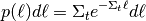
where  is the total macroscopic cross section of the
material. Equation (1) tells us that the further the distance is
to the next collision, the less likely the particle will travel that
distance. In order to sample the probability distribution function, we first
need to convert it to a cumulative distribution function
is the total macroscopic cross section of the
material. Equation (1) tells us that the further the distance is
to the next collision, the less likely the particle will travel that
distance. In order to sample the probability distribution function, we first
need to convert it to a cumulative distribution function
(2)
By setting the cumulative distribution function equal to  , a random
number on the unit interval, and solving for the distance , we
obtain a formula for sampling the distance to next collision:
, a random
number on the unit interval, and solving for the distance , we
obtain a formula for sampling the distance to next collision:
(3)
Since is uniformly distributed on  , this implies that
, this implies that
 is also uniformly distributed on as well. Thus,
the formula usually used to calculate the distance to next collision is
is also uniformly distributed on as well. Thus,
the formula usually used to calculate the distance to next collision is
(4)
5.2.  and Other Disappearance Reactions¶
and Other Disappearance Reactions¶
All absorption reactions other than fission do not produce any secondary
neutrons. As a result, these are the easiest type of reactions to handle. When a
collision occurs, the first step is to sample a nuclide within a material. Once
the nuclide has been sampled, then a specific reaction for that nuclide is
sampled. Since the total absorption cross section is pre-calculated at the
beginning of a simulation, the first step in sampling a reaction is to determine
whether a “disappearance” reaction occurs where no secondary neutrons are
produced. This is done by sampling a random number on the interval
and checking whether
(5)
where 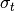 is the total cross section, 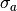 is the absorption cross section (this includes fission), and 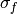 is the total fission cross section. If this condition is met, then the neutron is killed and we proceed to simulate the next neutron from the source bank.
No secondary particles from disappearance reactions such as photons or
alpha-particles are produced or tracked. To truly capture the affects of gamma
heating in a problem, it would be necessary to explicitly track photons
originating from and other reactions.
5.3. Elastic Scattering¶
Elastic scattering refers to the process by which a neutron scatters off a nucleus and does not leave it in an excited. It is referred to as “elastic” because in the center-of-mass system, the neutron does not actually lose energy. However, in lab coordinates, the neutron does indeed lose energy. Elastic scattering can be treated exactly in a Monte Carlo code thanks to its simplicity.
Let us discuss how OpenMC handles two-body elastic scattering kinematics. The
first step is to determine whether the target nucleus has any associated
motion. Above a certain energy threshold (400 kT by default), all scattering is
assumed to take place with the target at rest. Below this threshold though, we
must account for the thermal motion of the target nucleus. Methods to sample the
velocity of the target nucleus are described later in section
Effect of Thermal Motion on Cross Sections. For the time being, let us assume that we have sampled the
target velocity  . The velocity of the center-of-mass system
is calculated as
. The velocity of the center-of-mass system
is calculated as
(6)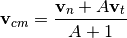
where 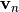 is the velocity of the neutron and  is the
atomic mass of the target nucleus measured in neutron masses (commonly referred
to as the atomic weight ratio). With the velocity of the center-of-mass
calculated, we can then determine the neutron’s velocity in the center-of-mass
system:
is the
atomic mass of the target nucleus measured in neutron masses (commonly referred
to as the atomic weight ratio). With the velocity of the center-of-mass
calculated, we can then determine the neutron’s velocity in the center-of-mass
system:
(7)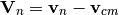
where we have used uppercase 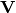 to denote the center-of-mass system. The direction of the neutron in the center-of-mass system is
(8)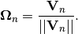
At low energies, elastic scattering will be isotropic in the center-of-mass
system, but for higher energies, there may be p-wave and higher order scattering
that leads to anisotropic scattering. Thus, in general, we need to sample a
cosine of the scattering angle which we will refer to as  . For
elastic scattering, the secondary angle distribution is always given in the
center-of-mass system and is sampled according to the procedure outlined in
Sampling Secondary Angle Distributions. After the cosine of the angle of scattering has been
sampled, we need to determine the neutron’s new direction
. For
elastic scattering, the secondary angle distribution is always given in the
center-of-mass system and is sampled according to the procedure outlined in
Sampling Secondary Angle Distributions. After the cosine of the angle of scattering has been
sampled, we need to determine the neutron’s new direction
 in the center-of-mass system. This is done with the
procedure in Transforming a Particle’s Coordinates. The new direction is multiplied by
the speed of the neutron in the center-of-mass system to obtain the new velocity
vector in the center-of-mass:
in the center-of-mass system. This is done with the
procedure in Transforming a Particle’s Coordinates. The new direction is multiplied by
the speed of the neutron in the center-of-mass system to obtain the new velocity
vector in the center-of-mass:
(9)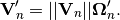
Finally, we transform the velocity in the center-of-mass system back to lab coordinates:
(10)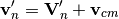
In OpenMC, the angle and energy of the neutron are stored rather than the velocity vector itself, so the post-collision angle and energy can be inferred from the post-collision velocity of the neutron in the lab system.
For tallies that require the scattering cosine, it is important to store the scattering cosine in the lab system. If we know the scattering cosine in the center-of-mass, the scattering cosine in the lab system can be calculated as
(11)
However, equation (11) is only valid if the target was at rest. When the target nucleus does have thermal motion, the cosine of the scattering angle can be determined by simply taking the dot product of the neutron’s initial and final direction in the lab system.
5.4. Inelastic Scattering¶
The major algorithms for inelastic scattering were described in previous sections. First, a scattering cosine is sampled using the algorithms in Sampling Secondary Angle Distributions. Then an outgoing energy is sampled using the algorithms in Sampling Secondary Energy and Correlated Angle/Energy Distributions. If the outgoing energy and scattering cosine were given in the center-of-mass system, they are transformed to laboratory coordinates using the algorithm described in Transforming a Particle’s Coordinates. Finally, the direction of the particle is changed also using the procedure in Transforming a Particle’s Coordinates.
Although inelastic scattering leaves the target nucleus in an excited state, no secondary photons from nuclear de-excitation are tracked in OpenMC.
5.5.  Reactions¶
Reactions¶
These types of reactions are just treated as inelastic scattering and as such
are subject to the same procedure as described in Inelastic Scattering. For
reactions with integral multiplicity, e.g.,  , an appropriate
number of secondary neutrons are created. For reactions that have a multiplicity
given as a function of the incoming neutron energy (which occasionally occurs
for MT=5), the weight of the outgoing neutron is multiplied by the multiplcity.
, an appropriate
number of secondary neutrons are created. For reactions that have a multiplicity
given as a function of the incoming neutron energy (which occasionally occurs
for MT=5), the weight of the outgoing neutron is multiplied by the multiplcity.
5.6. Fission¶
While fission is normally considered an absorption reaction, as far as it
concerns a Monte Carlo simulation it actually bears more similarities to
inelastic scattering since fission results in secondary neutrons in the exit
channel. Other absorption reactions like or
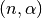, on the contrary, produce no neutrons. There are a few other
idiosyncrasies in treating fission. In an eigenvalue calculation, secondary
neutrons from fission are only “banked” for use in the next generation rather
than being tracked as secondary neutrons from elastic and inelastic scattering
would be. On top of this, fission is sometimes broken into first-chance fission,
second-chance fission, etc. An ACE table either lists the partial fission
reactions with secondary energy distributions for each one, or a total fission
reaction with a single secondary energy distribution.
When a fission reaction is sampled in OpenMC (either total fission or, if data
exists, first- or second-chance fission), the following algorithm is used to
create and store fission sites for the following generation. First, the average
number of prompt and delayed neutrons must be determined to decide whether the
secondary neutrons will be prompt or delayed. This is important because delayed
neutrons have a markedly different spectrum from prompt neutrons, one that has a
lower average energy of emission. The total number of neutrons emitted
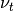 is given as a function of incident energy in the ACE format. Two
representations exist for . The first is a polynomial of order
 with coefficients
with coefficients  . If has this
format, we can evaluate it at incoming energy
. If has this
format, we can evaluate it at incoming energy  by using the equation
by using the equation
(12)
The other representation is just a tabulated function with a specified
interpolation law. The number of prompt neutrons released per fission event
 is also given as a function of incident energy and can be
specified in a polynomial or tabular format. The number of delayed neutrons
released per fission event
is also given as a function of incident energy and can be
specified in a polynomial or tabular format. The number of delayed neutrons
released per fission event  can only be specified in a tabular
format. In practice, we only need to determine 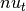 and
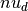. Once these have been determined, we can calculated the delayed
neutron fraction
can only be specified in a tabular
format. In practice, we only need to determine 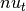 and
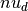. Once these have been determined, we can calculated the delayed
neutron fraction
(13)
We then need to determine how many total neutrons should be emitted from fission. If no survival biasing is being used, then the number of neutrons emitted is
(14)
where  is the statistical weight and
is the statistical weight and  is the effective
multiplication factor from the previous generation. The number of neutrons
produced is biased in this manner so that the expected number of fission
neutrons produced is the number of source particles that we started with in the
generation. Since
is the effective
multiplication factor from the previous generation. The number of neutrons
produced is biased in this manner so that the expected number of fission
neutrons produced is the number of source particles that we started with in the
generation. Since  is not an integer, we use the following procedure
to obtain an integral number of fission neutrons to produce. If 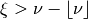, then we produce
neutrons. Otherwise, we produce 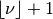 neutrons. Then,
for each fission site produced, we sample the outgoing angle and energy
according to the algorithms given in Sampling Secondary Angle Distributions and
Sampling Secondary Energy and Correlated Angle/Energy Distributions respectively. If the neutron is to be born delayed, then
there is an extra step of sampling a delayed neutron precursor group since they
each have an associated secondary energy distribution.
is not an integer, we use the following procedure
to obtain an integral number of fission neutrons to produce. If 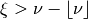, then we produce
neutrons. Otherwise, we produce 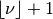 neutrons. Then,
for each fission site produced, we sample the outgoing angle and energy
according to the algorithms given in Sampling Secondary Angle Distributions and
Sampling Secondary Energy and Correlated Angle/Energy Distributions respectively. If the neutron is to be born delayed, then
there is an extra step of sampling a delayed neutron precursor group since they
each have an associated secondary energy distribution.
The sampled outgoing angle and energy of fission neutrons along with the position of the collision site are stored in an array called the fission bank. In a subsequent generation, these fission bank sites are used as starting source sites.
5.7. Secondary Angles and Energy Distributions¶
For any reactions with secondary neutrons, it is necessary to sample secondary
angle and energy distributions. This includes elastic and inelastic scattering,
fission, and reactions. In some cases, the angle and energy
distributions may be specified separately, and in other cases, they may be
specified as a correlated angle-energy distribution. In the following sections,
we will outline the methods used to sample secondary distributions as well as
how they are used to modify the state of a particle.
5.7.1. Sampling Secondary Angle Distributions¶
For elastic scattering, it is only necessary to specific a secondary angle distribution since the outgoing energy can be determined analytically. Other reactions may also have separate secondary angle and secondary energy distributions that are uncorrelated. In these cases, the secondary angle distribution is represented as either
- An Isotropic angular distribution,
- An equiprobable distribution with 32 bins, or
- A tabular distribution.
5.7.1.1. Isotropic Angular Distribution¶
In the first case, no data needs to be stored on the ACE table, and the cosine of the scattering angle is simply calculated as
(15)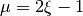
where is the cosine of the scattering angle and is a
random number sampled uniformly on .
5.7.1.2. Equiprobable Angle Bin Distribution¶
For a 32 equiprobable bin distribution, we select a random number to
sample a cosine bin  such that
such that
(16)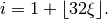
The same random number can then also be used to interpolate between neighboring
values to get the final scattering cosine:
(17)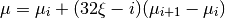
where  is the -th scattering cosine.
is the -th scattering cosine.
5.7.1.3. Tabular Angular Distribution¶
As the MCNP Manual points out, using an equiprobable bin distribution works
well for high-probability regions of the scattering cosine probability, but for
low-probability regions it is not very accurate. Thus, a more accurate method is
to represent the scattering cosine with a tabular distribution. In this case, we
have a table of cosines and their corresponding values for a probability
distribution function and cumulative distribution function. For each incoming
neutron energy  , let us call
, let us call  the j-th value in the
probability distribution function and 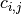 the j-th value in the
cumulative distribution function. We first find the interpolation factor on the
incoming energy grid:
the j-th value in the
probability distribution function and 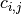 the j-th value in the
cumulative distribution function. We first find the interpolation factor on the
incoming energy grid:
(18)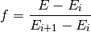
where is the incoming energy of the particle. Then, statistical
interpolation is performed to choose between using the cosines and distribution
functions corresponding to energy and 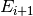. Let
be the chosen table where 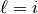 if 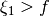 and
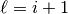 otherwise, where 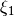 is a random number. Another
random number 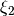 is used to sample a scattering cosine bin  using the cumulative distribution function:
using the cumulative distribution function:
(19)
The final scattering cosine will depend on whether histogram or linear-linear interpolation is used. In general, we can write the cumulative distribution function as
(20)
where 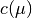 is the cumulative distribution function and 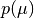
is the probability distribution function. Since we know that
 , this implies that for 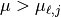,
, this implies that for 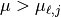,
(21)
For histogram interpolation, we have that  for
for
 . Thus, after integrating
(21) we have that
. Thus, after integrating
(21) we have that
(22)
Solving for the scattering cosine, we obtain the final form for histogram interpolation:
(23)
For linear-linear interpolation, we represent the function  as a
first-order polynomial in
as a
first-order polynomial in  . If we interpolate between successive
values on the probability distribution function, we know that
. If we interpolate between successive
values on the probability distribution function, we know that
(24)
Solving for in equation (24) and inserting it
into equation (21), we obtain
(25)![c(\mu) = c_{\ell,j} + \int_{\mu_{\ell,j}}^{\mu} \left [ \frac{p_{\ell,j+1} -
p_{\ell,j}}{\mu_{\ell,j+1} - \mu_{\ell,j}} (\mu' - \mu_{\ell,j}) +
p_{\ell,j} \right ] d\mu'.](../_images/math/37cefa66a3f4d378b1718d75213d61e9801ce3a0.png)
Let us now make a change of variables using
(26)
Equation (25) then becomes
(27)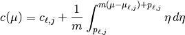
where we have used
(28)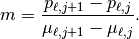
Integrating equation (27), we have
(29)![c(\mu) = c_{\ell,j} + \frac{1}{2m} \left ( \left [ m (\mu - \mu_{\ell,j} ) +
p_{\ell,j} \right ]^2 - p_{\ell,j}^2 \right ) = \xi_2](../_images/math/3379b0bfb17419e7d5385013de923b8803291b07.png)
Solving for , we have the final form for the scattering cosine using
linear-linear interpolation:
(30)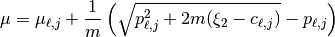
5.7.2. Sampling Secondary Energy and Correlated Angle/Energy Distributions¶
For a reaction with secondary neutrons, it is necessary to determine the outgoing energy of the neutrons. For any reaction other than elastic scattering, the outgoing energy must be determined based on tabulated or parameterized data. The ENDF-6 Format specifies a variety of ways that the secondary energy distribution can be represented. ENDF File 5 contains uncorrelated energy distribution where ENDF File 6 contains correlated energy-angle distributions. The ACE format specifies its own representations based loosely on the formats given in ENDF-6. In this section, we will describe how the outgoing energy of secondary particles is determined based on each ACE law.
One of the subtleties in the ACE format is the fact that a single reaction can
have multiple secondary energy distributions. This is mainly useful for
reactions with multiple neutrons in the exit channel such as or
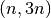. In these types of reactions, each neutron is emitted
corresponding to a different excitation level of the compound nucleus, and thus
in general the neutrons will originate from different energy distributions. If
multiple energy distributions are present, they are assigned probabilities that
can then be used to randomly select one.
Once a secondary energy distribution has been sampled, the procedure for determining the outgoing energy will depend on which ACE law has been specified for the data.
5.7.2.1. ACE Law 1 - Tabular Equiprobable Energy Bins¶
In the tabular equiprobable bin representation, an array of equiprobable outgoing energy bins is given for a number of incident energies. While the representation itself is simple, the complexity lies in how one interpolates between incident as well as outgoing energies on such a table. If one performs simple interpolation between tables for neighboring incident energies, it is possible that the resulting energies would violate laws governing the kinematics, i.e. the outgoing energy may be outside the range of available energy in the reaction.
To avoid this situation, the accepted practice is to use a process known as
scaled interpolation [Doyas]. First, we find the tabulated incident energies
which bound the actual incoming energy of the particle, i.e. find such
that 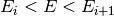 and calculate the interpolation factor  via (18). Then, we interpolate between the minimum and
maximum energies of the outgoing energy distributions corresponding to
and :
via (18). Then, we interpolate between the minimum and
maximum energies of the outgoing energy distributions corresponding to
and :
(31)
where  and 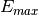 are the minimum and maximum outgoing
energies of a scaled distribution,
and 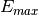 are the minimum and maximum outgoing
energies of a scaled distribution,  is the j-th outgoing energy
corresponding to the incoming energy , and
is the j-th outgoing energy
corresponding to the incoming energy , and  is the number of
outgoing energy bins. Next, statistical interpolation is performed to choose
between using the outgoing energy distributions corresponding to energy
and . Let be the chosen table where
if and otherwise, and
is a random number. Now, we randomly sample an equiprobable
outgoing energy bin and interpolate between successive values on the
outgoing energy distribution:
is the number of
outgoing energy bins. Next, statistical interpolation is performed to choose
between using the outgoing energy distributions corresponding to energy
and . Let be the chosen table where
if and otherwise, and
is a random number. Now, we randomly sample an equiprobable
outgoing energy bin and interpolate between successive values on the
outgoing energy distribution:
(32)
where is a random number sampled uniformly on . Since
this outgoing energy may violate reaction kinematics, we then scale it to the
minimum and maximum energies we calculated earlier to get the final outgoing
energy:
(33)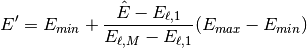
5.7.2.2. ACE Law 3 - Inelastic Level Scattering¶
It can be shown (see Foderaro) that in inelastic level scattering, the outgoing
energy of the neutron  can be related to the Q-value of the reaction
and the incoming energy:
can be related to the Q-value of the reaction
and the incoming energy:
(34)
where is the mass of the target nucleus measured in neutron masses.
5.7.2.3. ACE Law 4 - Continuous Tabular Distribution¶
This representation is very similar to ACE Law 1 - Tabular Equiprobable Energy Bins except that instead of
equiprobable outgoing energy bins, the outgoing energy distribution for each
incoming energy is represented with a probability distribution function. For
each incoming neutron energy , let us call the j-th
value in the probability distribution function, the j-th value
in the cumulative distribution function, and the j-th outgoing
energy.
We proceed first as we did for ACE Law 1, determining the bounding energies of
the particle’s incoming energy such that and
calculating an interpolation factor with equation
(18). Next, statistical interpolation is performed to
choose between using the outgoing energy distributions corresponding to energy
and . Let be the chosen table where
if and otherwise, and
is a random number. Then, we sample an outgoing energy bin
using the cumulative distribution function:
(35)
where is a random number sampled uniformly on . At
this point, we need to interpolate between the successive values on the outgoing
energy distribution using either histogram or linear-linear interpolation. The
formulas for these can be derived along the same lines as those found in
Tabular Angular Distribution. For histogram interpolation, the interpolated outgoing
energy on the -th distribution is
(36)
If linear-linear interpolation is to be used, the outgoing energy on the
-th distribution is
(37)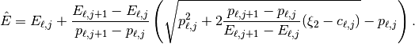
Since this outgoing energy may violate reaction kinematics, we then scale it to minimum and maximum energies interpolated between the neighboring outgoing energy distributions to get the final outgoing energy:
(38)
where and are defined the same as in equation
(31).
5.7.2.4. ACE Law 7 - Maxwell Fission Spectrum¶
One representation of the secondary energies for neutrons from fission is the so-called Maxwell spectrum. A probability distribution for the Maxwell spectrum can be written in the form
(39)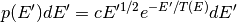
where is the incoming energy of the neutron and  is the
so-called nuclear temperature, which is a function of the incoming energy of the
neutron. The ACE format contains a list of nuclear temperatures versus incoming
energies. The nuclear temperature is interpolated between neighboring incoming
energies using a specified interpolation law. Once the temperature is
determined, we then calculate a candidate outgoing energy based on rule C64 in
the Monte Carlo Sampler:
is the
so-called nuclear temperature, which is a function of the incoming energy of the
neutron. The ACE format contains a list of nuclear temperatures versus incoming
energies. The nuclear temperature is interpolated between neighboring incoming
energies using a specified interpolation law. Once the temperature is
determined, we then calculate a candidate outgoing energy based on rule C64 in
the Monte Carlo Sampler:
(40)![E' = -T \left [ \log (\xi_1) + \log (\xi_2) \cos^2 \left ( \frac{\pi
\xi_3}{2} \right ) \right ]](../_images/math/eb903f5c889949b4884436afdca0991a11c27fa3.png)
where 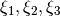 are random numbers sampled on the unit interval. The outgoing energy is only accepted if
(41)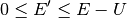
where  is called the restriction energy and is specified on the ACE
table. If the outgoing energy is rejected, it is resampled using equation
(40).
is called the restriction energy and is specified on the ACE
table. If the outgoing energy is rejected, it is resampled using equation
(40).
5.7.2.5. ACE Law 9 - Evaporation Spectrum¶
Evaporation spectra are primarily used in compound nucleus processes where a secondary particle can “evaporate” from the compound nucleus if it has sufficient energy. The probability distribution for an evaporation spectrum can be written in the form
(42)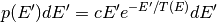
where is the incoming energy of the neutron and is the
nuclear temperature, which is a function of the incoming energy of the
neutron. The ACE format contains a list of nuclear temperatures versus incoming
energies. The nuclear temperature is interpolated between neighboring incoming
energies using a specified interpolation law. Once the temperature is
determined, we then calculate a candidate outgoing energy based on the algorithm
given in LA-UR-14-27694:
(43)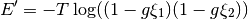
where  ,
,  , is the
restriction energy, and
, is the
restriction energy, and  are random numbers sampled on the
unit interval. The outgoing energy is only accepted according to the restriction
energy as in equation (41). This algorithm has a much
higher rejection efficiency than the standard technique, i.e. rule C45 in the
Monte Carlo Sampler.
are random numbers sampled on the
unit interval. The outgoing energy is only accepted according to the restriction
energy as in equation (41). This algorithm has a much
higher rejection efficiency than the standard technique, i.e. rule C45 in the
Monte Carlo Sampler.
5.7.2.6. ACE Law 11 - Energy-Dependent Watt Spectrum¶
The probability distribution for a Watt fission spectrum can be written in the form
(44)
where  and
and  are parameters for the distribution and are given
as tabulated functions of the incoming energy of the neutron. These two
parameters are interpolated on the incoming energy grid using a specified
interpolation law. Once the parameters have been determined, we sample a
Maxwellian spectrum with nuclear temperature using the algorithm
described in ACE Law 7 - Maxwell Fission Spectrum to get an energy
are parameters for the distribution and are given
as tabulated functions of the incoming energy of the neutron. These two
parameters are interpolated on the incoming energy grid using a specified
interpolation law. Once the parameters have been determined, we sample a
Maxwellian spectrum with nuclear temperature using the algorithm
described in ACE Law 7 - Maxwell Fission Spectrum to get an energy  . Then, the outgoing
energy is calculated as
. Then, the outgoing
energy is calculated as
(45)
where is a random number sampled on the interval . The
outgoing energy is only accepted according to a specified restriction energy
as defined in equation (41).
This algorithm can be found in Forrest Brown’s lectures on Monte Carlo methods and is an unpublished sampling scheme based on the original Watt spectrum derivation [Watt].
5.7.2.7. ACE Law 44 - Kalbach-Mann Correlated Scattering¶
This law is very similar to ACE Law 4 except now the outgoing angle of the
neutron is correlated to the outgoing energy and is not sampled from a separate
distribution. For each incident neutron energy tabulated, there is
an array of precompound factors 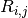 and angular distribution slopes
 corresponding to each outgoing energy bin in addition
to the outgoing energies and distribution functions as in ACE Law 4.
corresponding to each outgoing energy bin in addition
to the outgoing energies and distribution functions as in ACE Law 4.
The calculation of the outgoing energy of the neutron proceeds exactly the same
as in the algorithm described in ACE Law 4 - Continuous Tabular Distribution. In that algorithm, we found
an interpolation factor , statistically sampled an incoming energy bin
, and sampled an outgoing energy bin based on the
tabulated cumulative distribution function. Once the outgoing energy has been
determined with equation (38), we then need to calculate the
outgoing angle based on the tabulated Kalbach-Mann parameters. These parameters
themselves are subject to either histogram or linear-linear interpolation on the
outgoing energy grid. For histogram interpolation, the parameters are
(46)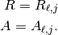
If linear-linear interpolation is specified, the parameters are
(47)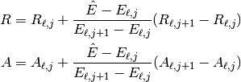
where  is defined in equation (37). With the
parameters determined, the probability distribution function for the cosine of
the scattering angle is
is defined in equation (37). With the
parameters determined, the probability distribution function for the cosine of
the scattering angle is
(48)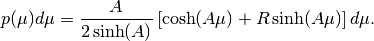
The rules for sampling this probability distribution function can be derived based on rules C39 and C40 in the Monte Carlo Sampler. First, we sample two random numbers 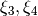 on the unit interval. If 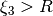 then the outgoing angle is
(49)
where  . If , then the
outgoing angle is
. If , then the
outgoing angle is
(50)
5.7.2.8. ACE Law 61 - Correlated Energy and Angle Distribution¶
This law is very similar to ACE Law 44 in the sense that the outgoing angle of
the neutron is correlated to the outgoing energy and is not sampled from a
separate distribution. In this case though, rather than being determined from an
analytical distribution function, the cosine of the scattering angle is
determined from a tabulated distribution. For each incident energy and
outgoing energy , there is a tabulated angular distribution.
The calculation of the outgoing energy of the neutron proceeds exactly the same
as in the algorithm described in ACE Law 4 - Continuous Tabular Distribution. In that algorithm, we found
an interpolation factor , statistically sampled an incoming energy bin
, and sampled an outgoing energy bin based on the
tabulated cumulative distribution function. Once the outgoing energy has been
determined with equation (38), we then need to decide which
angular distribution to use. If histogram interpolation was used on the outgoing
energy bins, then we use the angular distribution corresponding to incoming
energy bin and outgoing energy bin . If linear-linear
interpolation was used on the outgoing energy bins, then we use the whichever
angular distribution was closer to the sampled value of the cumulative
distribution function for the outgoing energy. The actual algorithm used to
sample the chosen tabular angular distribution has been previously described in
Tabular Angular Distribution.
5.7.2.9. ACE Law 66 - N-Body Phase Space Distribution¶
Reactions in which there are more than two products of similar masses are
sometimes best treated by using what’s known as an N-body phase
distribution. This distribution has the following probability density function
for outgoing energy of the -th particle in the center-of-mass system:
(51)
where  is the number of outgoing particles, is a
normalization constant, is the maximum center-of-mass energy
for particle , and is the outgoing energy. The algorithm for
sampling the outgoing energy is based on algorithms R28, C45, and C64 in the
Monte Carlo Sampler. First we calculate the maximum energy in the
center-of-mass using the following equation:
is the number of outgoing particles, is a
normalization constant, is the maximum center-of-mass energy
for particle , and is the outgoing energy. The algorithm for
sampling the outgoing energy is based on algorithms R28, C45, and C64 in the
Monte Carlo Sampler. First we calculate the maximum energy in the
center-of-mass using the following equation:
(52)
where is the total mass of the outgoing particles in neutron masses,
is the mass of the original target nucleus in neutron masses, and
 is the Q-value of the reaction. Next we sample a value
is the Q-value of the reaction. Next we sample a value  from
a Maxwell distribution with a nuclear temperature of one using the algorithm
outlined in ACE Law 7 - Maxwell Fission Spectrum. We then need to determine a value
from
a Maxwell distribution with a nuclear temperature of one using the algorithm
outlined in ACE Law 7 - Maxwell Fission Spectrum. We then need to determine a value  that
will depend on how many outgoing particles there are. For , we
simply sample another Maxwell distribution with unity nuclear temperature. For
, we use the equation
that
will depend on how many outgoing particles there are. For , we
simply sample another Maxwell distribution with unity nuclear temperature. For
, we use the equation
(53)
where  are random numbers sampled on the interval
. For , we use the equation
are random numbers sampled on the interval
. For , we use the equation
(54)
After and have been determined, the outgoing energy is then
calculated as
(55)
There are two important notes to make regarding the N-body phase space
distribution. First, the documentation (and code) for MCNP5-1.60 has a mistake
in the algorithm for . That being said, there are no existing
nuclear data evaluations which use an N-body phase space distribution with
, so the error would not affect any calculations. In the
ENDF/B-VII.0 nuclear data evaluation, only one reaction uses an N-body phase
space distribution at all, the reaction with H-2.
5.8. Transforming a Particle’s Coordinates¶
Once the cosine of the scattering angle has been sampled either from
a angle distribution or a correlated angle-energy distribution, we are still
left with the task of transforming the particle’s coordinates. If the outgoing
energy and scattering cosine were given in the center-of-mass system, then we
first need to transform these into the laboratory system. The relationship
between the outgoing energy in center-of-mass and laboratory is
(56)
where is the outgoing energy in the center-of-mass system,
 is the scattering cosine in the center-of-mass system,
is the outgoing energy in the laboratory system, and is the
incident neutron energy. The relationship between the scattering cosine in
center-of-mass and laboratory is
is the scattering cosine in the center-of-mass system,
is the outgoing energy in the laboratory system, and is the
incident neutron energy. The relationship between the scattering cosine in
center-of-mass and laboratory is
(57)
where is the scattering cosine in the laboratory system. The
scattering cosine still only tells us the cosine of the angle between the
original direction of the particle and the new direction of the particle. If we
express the pre-collision direction of the particle as and the post-collision direction of the particle as
 , it is possible to relate the pre- and
post-collision components. We first need to uniformly sample an azimuthal angle
, it is possible to relate the pre- and
post-collision components. We first need to uniformly sample an azimuthal angle
 in
in  . After the azimuthal angle has been sampled,
the post-collision direction is calculated as
. After the azimuthal angle has been sampled,
the post-collision direction is calculated as
(58)
5.9. Effect of Thermal Motion on Cross Sections¶
When a neutron scatters off of a nucleus, it may often be assumed that the target nucleus is at rest. However, the target nucleus will have motion associated with its thermal vibration, even at absolute zero (This is due to the zero-point energy arising from quantum mechanical considerations). Thus, the velocity of the neutron relative to the target nucleus is in general not the same as the velocity of the neutron entering the collision.
The effect of the thermal motion on the interaction probability can be written as
(59)
where is the magnitude of the velocity of the neutron,
 is an effective cross section, is the temperature
of the target material,
is an effective cross section, is the temperature
of the target material,  is the velocity of the target
nucleus, is the magnitude of the
relative velocity,
is the velocity of the target
nucleus, is the magnitude of the
relative velocity,  is the cross section at 0 K, and is the probability distribution for the target nucleus velocity
at temperature (a Maxwellian). In a Monte Carlo code, one must account
for the effect of the thermal motion on both the integrated cross section as
well as secondary angle and energy distributions. For integrated cross sections,
it is possible to calculate thermally-averaged cross sections by applying a
kernel Doppler broadening algorithm to data at 0 K (or some temperature lower
than the desired temperature). The most ubiquitous algorithm for this purpose is
the [SIGMA1] method developed by Red Cullen and subsequently refined by
others. This method is used in the NJOY and PREPRO data processing codes.
is the cross section at 0 K, and is the probability distribution for the target nucleus velocity
at temperature (a Maxwellian). In a Monte Carlo code, one must account
for the effect of the thermal motion on both the integrated cross section as
well as secondary angle and energy distributions. For integrated cross sections,
it is possible to calculate thermally-averaged cross sections by applying a
kernel Doppler broadening algorithm to data at 0 K (or some temperature lower
than the desired temperature). The most ubiquitous algorithm for this purpose is
the [SIGMA1] method developed by Red Cullen and subsequently refined by
others. This method is used in the NJOY and PREPRO data processing codes.
The effect of thermal motion on secondary angle and energy distributions can be accounted for on-the-fly in a Monte Carlo simulation. We must first qualify where it is actually used however. All threshold reactions are treated as being independent of temperature, and therefore they are not Doppler broadened in NJOY and no special procedure is used to adjust the secondary angle and energy distributions. The only non-threshold reactions with secondary neutrons are elastic scattering and fission. For fission, it is assumed that the neutrons are emitted isotropically (this is not strictly true, but is nevertheless a good approximation). This leaves only elastic scattering that needs a special thermal treatment for secondary distributions.
Fortunately, it is possible to directly sample the velocity of the target nuclide and then use it directly in the kinematic calculations. However, this calculation is a bit more nuanced than it might seem at first glance. One might be tempted to simply sample a Maxwellian distribution for the velocity of the target nuclide. Careful inspection of equation (59) however tells us that target velocities that produce relative velocities which correspond to high cross sections will have a greater contribution to the effective reaction rate. This is most important when the velocity of the incoming neutron is close to a resonance. For example, if the neutron’s velocity corresponds to a trough in a resonance elastic scattering cross section, a very small target velocity can cause the relative velocity to correspond to the peak of the resonance, thus making a disproportionate contribution to the reaction rate. The conclusion is that if we are to sample a target velocity in the Monte Carlo code, it must be done in such a way that preserves the thermally-averaged reaction rate as per equation (59).
The method by which most Monte Carlo codes sample the target velocity for use in elastic scattering kinematics is outlined in detail by [Gelbard]. The derivation here largely follows that of Gelbard. Let us first write the reaction rate as a function of the velocity of the target nucleus:
(60)
where  is the reaction rate. Note that this is just the right-hand side
of equation (59). Based on the discussion above, we want to
construct a probability distribution function for sampling the target velocity
to preserve the reaction rate – this is different from the overall probability
distribution function for the target velocity,
is the reaction rate. Note that this is just the right-hand side
of equation (59). Based on the discussion above, we want to
construct a probability distribution function for sampling the target velocity
to preserve the reaction rate – this is different from the overall probability
distribution function for the target velocity,  . This
probability distribution function can be found by integrating equation
(60) to obtain a normalization factor:
. This
probability distribution function can be found by integrating equation
(60) to obtain a normalization factor:
(61)
Let us call the normalization factor in the denominator of equation
(61)  .
.
5.9.1. Constant Cross Section Model¶
It is often assumed that  is constant over the range of
relative velocities of interest. This is a good assumption for almost all cases
since the elastic scattering cross section varies slowly with velocity for light
nuclei, and for heavy nuclei where large variations can occur due to resonance
scattering, the moderating effect is rather small. Nonetheless, this assumption
may cause incorrect answers in systems with low-lying resonances that can cause
a significant amount of up-scatter that would be ignored by this assumption
(e.g. U-238 in commercial light-water reactors). We will revisit this assumption
later in Energy-Dependent Cross Section Model. For now, continuing with the
assumption, we write
is constant over the range of
relative velocities of interest. This is a good assumption for almost all cases
since the elastic scattering cross section varies slowly with velocity for light
nuclei, and for heavy nuclei where large variations can occur due to resonance
scattering, the moderating effect is rather small. Nonetheless, this assumption
may cause incorrect answers in systems with low-lying resonances that can cause
a significant amount of up-scatter that would be ignored by this assumption
(e.g. U-238 in commercial light-water reactors). We will revisit this assumption
later in Energy-Dependent Cross Section Model. For now, continuing with the
assumption, we write  which simplifies
(61) to
which simplifies
(61) to
(62)
The Maxwellian distribution in velocity is
(63)
where  is the mass of the target nucleus and
is the mass of the target nucleus and  is Boltzmann’s
constant. Notice here that the term in the exponential is dependent only on the
speed of the target, not on the actual direction. Thus, we can change the
Maxwellian into a distribution for speed rather than velocity. The differential
element of velocity is
is Boltzmann’s
constant. Notice here that the term in the exponential is dependent only on the
speed of the target, not on the actual direction. Thus, we can change the
Maxwellian into a distribution for speed rather than velocity. The differential
element of velocity is
(64)
Let us define the Maxwellian distribution in speed as
(65)
To simplify things a bit, we’ll define a parameter
(66)
Substituting equation (66) into equation (65), we obtain
(67)
Now, changing variables in equation (62) by using the result from equation (65), our new probability distribution function is
(68)
Again, the Maxwellian distribution for the speed of the target nucleus has no
dependence on the angle between the neutron and target velocity vectors. Thus,
only the term  imposes any constraint
on the allowed angle. Our last task is to take that term and write it in terms
of magnitudes of the velocity vectors and the angle rather than the vectors
themselves. We can establish this relation based on the law of cosines which
tells us that
imposes any constraint
on the allowed angle. Our last task is to take that term and write it in terms
of magnitudes of the velocity vectors and the angle rather than the vectors
themselves. We can establish this relation based on the law of cosines which
tells us that
(69)
Thus, we can infer that
(70)
Inserting equation (70) into (68), we obtain
(71)
This expression is still quite formidable and does not lend itself to any natural sampling scheme. We can divide this probability distribution into two parts as such:
(72)
In general, any probability distribution function of the form  with bounded can be sampled by sampling
with bounded can be sampled by sampling
 from the distribution
from the distribution
(73)
and accepting it with probability
(74)
The reason for dividing and multiplying the terms by  is to
ensure that the first term is bounded. In general, can take on arbitrarily large values, but if we divide it by
its maximum value , then it ensures that the function will be
bounded. We now must come up with a sampling scheme for equation
(73). To determine
is to
ensure that the first term is bounded. In general, can take on arbitrarily large values, but if we divide it by
its maximum value , then it ensures that the function will be
bounded. We now must come up with a sampling scheme for equation
(73). To determine  , we need to integrate
in equation (72). Doing so we find that
, we need to integrate
in equation (72). Doing so we find that
(75)
Thus, we need to sample the probability distribution function
(76)
Now, let us do a change of variables with the following definitions
(77)
Substituting equation (77) into equation (76) along
with  and doing some crafty rearranging of terms yields
and doing some crafty rearranging of terms yields
(78)
It’s important to make note of the following two facts. First, the terms outside
the parentheses are properly normalized probability distribution functions that
can be sampled directly. Secondly, the terms inside the parentheses are always
less than unity. Thus, the sampling scheme for is as follows. We
sample a random number on the interval and if
(79)
then we sample the probability distribution  for
using rule C49 in the Monte Carlo Sampler which we can then use to determine
the speed of the target nucleus from equation
(77). Otherwise, we sample the probability distribution
for
using rule C49 in the Monte Carlo Sampler which we can then use to determine
the speed of the target nucleus from equation
(77). Otherwise, we sample the probability distribution
 for using rule C61 in the
Monte Carlo Sampler.
for using rule C61 in the
Monte Carlo Sampler.
With a target speed sampled, we must then decide whether to accept it based on
the probability in equation (74). The cosine can be sampled
isotropically as where is a random number
on the unit interval. Since the maximum value of is
 , we then sample another random number
and accept the sampled target speed and cosine if
, we then sample another random number
and accept the sampled target speed and cosine if
(80)
If is not accepted, then we repeat the process and resample a target speed and cosine until a combination is found that satisfies equation (80).
5.9.2. Energy-Dependent Cross Section Model¶
As was noted earlier, assuming that the elastic scattering cross section is
constant in (60) is not strictly correct, especially when
low-lying resonances are present in the cross sections for heavy nuclides. To
correctly account for energy dependence of the scattering cross section entails
performing another rejection step. The most common method is to sample
and as in the constant cross section approximation and
then perform a rejection on the ratio of the 0 K elastic scattering cross
section at the relative velocity to the maximum 0 K elastic scattering cross
section over the range of velocities considered:
(81)
where it should be noted that the maximum is taken over the range . This method is known as Doppler broadening rejection correction (DBRC) and was first introduced by Becker et al.. OpenMC has an implementation of DBRC as well as an accelerated sampling method that are described fully in Walsh et al.
5.10. S( ) Tables¶
) Tables¶
For neutrons with thermal energies, generally less than 4 eV, the kinematics of scattering can be affected by chemical binding and crystalline effects of the target molecule. If these effects are not accounted for in a simulation, the reported results may be highly inaccurate. There is no general analytic treatment for the scattering kinematics at low energies, and thus when nuclear data is processed for use in a Monte Carlo code, special tables are created that give cross sections and secondary angle/energy distributions for thermal scattering that account for thermal binding effects. These tables are mainly used for moderating materials such as light or heavy water, graphite, hydrogen in ZrH, beryllium, etc.
The theory behind S() is rooted in quantum mechanics and is quite
complex. Those interested in first principles derivations for formulae relating
to S() tables should be referred to the excellent books by [Williams] and
[Squires]. For our purposes here, we will focus only on the use of already
processed data as it appears in the ACE format.
Each S() table can contain the following:
- Thermal inelastic scattering cross section;
- Thermal elastic scattering cross section;
- Correlated energy-angle distributions for thermal inelastic and elastic scattering.
Note that when we refer to “inelastic” and “elastic” scattering now, we are actually using these terms with respect to the scattering system. Thermal inelastic scattering means that the scattering system is left in an excited state; no particular nucleus is left in an excited state as would be the case for inelastic level scattering. In a crystalline material, the excitation of the scattering could correspond to the production of phonons. In a molecule, it could correspond to the excitation of rotational or vibrational modes.
Both thermal elastic and thermal inelastic scattering are generally divided into incoherent and coherent parts. Coherent elastic scattering refers to scattering in crystalline solids like graphite or beryllium. These cross sections are characterized by the presence of Bragg edges that relate to the crystal structure of the scattering material. Incoherent elastic scattering refers to scattering in hydrogenous solids such as polyethylene. As it occurs in ACE data, thermal inelastic scattering includes both coherent and incoherent effects and is dominant for most other materials including hydrogen in water.
5.10.1. Calculating Integrated Cross Sections¶
The first aspect of using S() tables is calculating cross sections to replace
the data that would normally appear on the incident neutron data, which do not
account for thermal binding effects. For incoherent elastic and inelastic
scattering, the cross sections are stored as linearly interpolable functions on
a specified energy grid. For coherent elastic data, the cross section can be
expressed as
(82)
where is the effective bound coherent scattering cross section,
is the effective Debye-Waller coefficient, are the
energies of the Bragg edges, and are related to crystallographic
structure factors. Since the functional form of the cross section is just 1/E
and the proportionality constant changes only at Bragg edges, the
proportionality constants are stored and then the cross section can be
calculated analytically based on equation (82).
5.10.2. Outgoing Angle for Coherent Elastic Scattering¶
Another aspect of using S() tables is determining the outgoing energy and
angle of the neutron after scattering. For incoherent and coherent elastic
scattering, the energy of the neutron does not actually change, but the angle
does change. For coherent elastic scattering, the angle will depend on which
Bragg edge scattered the neutron. The probability that edge will
scatter then neutron is given by
(83)
After a Bragg edge has been sampled, the cosine of the angle of scattering is given analytically by
(84)
where is the energy of the Bragg edge that scattered the neutron.
5.10.3. Outgoing Angle for Incoherent Elastic Scattering¶
For incoherent elastic scattering, the probability distribution for the cosine
of the angle of scattering is represent as a series of equally-likely discrete
cosines  for each incoming energy on the thermal
elastic energy grid. First the outgoing angle bin is sampled. Then, if
the incoming energy of the neutron satisfies the final
cosine is
for each incoming energy on the thermal
elastic energy grid. First the outgoing angle bin is sampled. Then, if
the incoming energy of the neutron satisfies the final
cosine is
(85)
where the interpolation factor is defined as
(86)
5.10.4. Outgoing Energy and Angle for Inelastic Scattering¶
Each S() table provides a correlated angle-energy secondary distribution for
neutron thermal inelastic scattering. There are three representations used
in the ACE thermal scattering data: equiprobable discrete outgoing
energies, non-uniform yet still discrete outgoing energies, and continuous
outgoing energies with corresponding probability and cumulative distribution
functions provided in tabular format. These three representations all
represent the angular distribution in a common format, using a series of
discrete equiprobable outgoing cosines.
5.10.4.1. Equi-Probable Outgoing Energies¶
If the thermal data was processed with  in NJOY, then the
outgoing energy spectra is represented in the ACE data as a set of discrete and
equiprobable outgoing energies. The procedure to determine the outgoing energy
and angle is as such. First, the interpolation factor is determined from
equation (86). Then, an outgoing energy bin is
sampled from a uniform distribution and then interpolated between values
corresponding to neighboring incoming energies:
in NJOY, then the
outgoing energy spectra is represented in the ACE data as a set of discrete and
equiprobable outgoing energies. The procedure to determine the outgoing energy
and angle is as such. First, the interpolation factor is determined from
equation (86). Then, an outgoing energy bin is
sampled from a uniform distribution and then interpolated between values
corresponding to neighboring incoming energies:
(87)
where is the j-th outgoing energy corresponding to the i-th
incoming energy. For each combination of incoming and outgoing energies, there
is a series equiprobable outgoing cosines. An outgoing cosine bin is sampled
uniformly and then the final cosine is interpolated on the incoming energy grid:
(88)
where is the k-th outgoing cosine corresponding to the j-th outgoing energy and the i-th incoming energy.
5.10.4.2. Skewed Equi-Probable Outgoing Energies¶
If the thermal data was processed with  in NJOY, then the
outgoing energy spectra is represented in the ACE data according to the
following: the first and last outgoing energies have a relative probability of
1, the second and second-to-last energies have a relative probability of 4, and
all other energies have a relative probability of 10. The procedure to
determine the outgoing energy and angle is similar to the method discussed
above, except that the sampled probability distribution is now skewed
accordingly.
in NJOY, then the
outgoing energy spectra is represented in the ACE data according to the
following: the first and last outgoing energies have a relative probability of
1, the second and second-to-last energies have a relative probability of 4, and
all other energies have a relative probability of 10. The procedure to
determine the outgoing energy and angle is similar to the method discussed
above, except that the sampled probability distribution is now skewed
accordingly.
5.10.4.3. Continuous Outgoing Energies¶
If the thermal data was processed with in NJOY, then the
outgoing energy spectra is represented by a continuous outgoing energy spectra
in tabular form with linear-linear interpolation. The sampling of the outgoing
energy portion of this format is very similar to ACE Law 61,
but the sampling of the correlated angle is performed as it was in the other
two representations discussed in this sub-section. In the Law 61 algorithm,
we found an interpolation factor , statistically sampled an incoming
energy bin , and sampled an outgoing energy bin based on
the tabulated cumulative distribution function. Once the outgoing energy has
been determined with equation (38), we then need to decide
which angular distribution data to use. Like the linear-linear interpolation
case in Law 61, the angular distribution closest to the sampled value of the
cumulative distribution function for the outgoing energy is utilized. The
actual algorithm utilized to sample the outgoing angle is shown in equation
(88).
5.11. Unresolved Resonance Region Probability Tables¶
In the unresolved resonance energy range, resonances may be so closely spaced that it is not possible for experimental measurements to resolve all resonances. To properly account for self-shielding in this energy range, OpenMC uses the probability table method [Levitt]. For most thermal reactors, the use of probability tables will not significantly affect problem results. However, for some fast reactors and other problems with an appreciable flux spectrum in the unresolved resonance range, not using probability tables may lead to incorrect results.
Probability tables in the ACE format are generated from the UNRESR module in NJOY following the method of Levitt. A similar method employed for the RACER and MC21 Monte Carlo codes is described in a paper by Sutton and Brown. For the discussion here, we will focus only on use of the probability table table as it appears in the ACE format.
Each probability table for a nuclide contains the following information at a number of incoming energies within the unresolved resonance range:
- Cumulative probabilities for cross section bands;
- Total cross section (or factor) in each band;
- Elastic scattering cross section (or factor) in each band;
- Fission cross section (or factor) in each band;
- cross section (or factor) in each band; and
- Neutron heating number (or factor) in each band.
It should be noted that unresolved resonance probability tables affect only integrated cross sections and no extra data need be given for secondary angle/energy distributions. Secondary distributions for elastic and inelastic scattering would be specified whether or not probability tables were present.
The procedure for determining cross sections in the unresolved range using
probability tables is as follows. First, the bounding incoming energies are
determined, i.e. find such that . We then
sample a cross section band using the cumulative probabilities for
table . This allows us to then calculate the elastic, fission, and
capture cross sections from the probability tables interpolating between
neighboring incoming energies. If interpolation is specified, then
the cross sections are calculated as
(89)
where  is the j-th band cross section corresponding to the
i-th incoming neutron energy and is the interpolation factor defined
in the same manner as (86). If logarithmic
interpolation is specified, the cross sections are calculated as
is the j-th band cross section corresponding to the
i-th incoming neutron energy and is the interpolation factor defined
in the same manner as (86). If logarithmic
interpolation is specified, the cross sections are calculated as
(90)
where the interpolation factor is now defined as
(91)
A flag is also present in the probability table that specifies whether an inelastic cross section should be calculated. If so, this is done from a normal reaction cross section (either MT=51 or a special MT). Finally, if the cross sections defined are above are specified to be factors and not true cross sections, they are multiplied by the underlying smooth cross section in the unresolved range to get the actual cross sections. Lastly, the total cross section is calculated as the sum of the elastic, fission, capture, and inelastic cross sections.
5.12. Variance Reduction Techniques¶
5.12.1. Survival Biasing¶
In problems with highly absorbing materials, a large fraction of neutrons may be killed through absorption reactions, thus leading to tallies with very few scoring events. To remedy this situation, an algorithm known as survival biasing or implicit absorption (or sometimes implicit capture, even though this is a misnomer) is commonly used.
In survival biasing, absorption reactions are prohibited from occurring and instead, at every collision, the weight of neutron is reduced by probability of absorption occurring, i.e.
(92)
where is the weight of the neutron after adjustment and is
the weight of the neutron before adjustment. A few other things need to be
handled differently if survival biasing is turned on. Although fission reactions
never actually occur with survival biasing, we still need to create fission
sites to serve as source sites for the next generation in the method of
successive generations. The algorithm for sampling fission sites is the same as
that described in Fission. The only difference is in equation
(14). We now need to produce
(93)
fission sites, where is the weight of the neutron before being
adjusted. One should note this is just the expected number of neutrons produced
per collision rather than the expected number of neutrons produced given that
fission has already occurred.
Additionally, since survival biasing can reduce the weight of the neutron to
very low values, it is always used in conjunction with a weight cutoff and
Russian rouletting. Two user adjustable parameters and  are given which are the weight below which neutrons should undergo Russian
roulette and the weight should they survive Russian roulette. The algorithm for
Russian rouletting is as follows. After a collision if , then the
neutron is killed with probability . If it survives, the weight
is set equal to . One can confirm that the average weight following
Russian roulette is simply , so the game can be considered “fair”. By
default, the cutoff weight in OpenMC is and the survival
weight is . These parameters vary from one Monte Carlo code to
another.
are given which are the weight below which neutrons should undergo Russian
roulette and the weight should they survive Russian roulette. The algorithm for
Russian rouletting is as follows. After a collision if , then the
neutron is killed with probability . If it survives, the weight
is set equal to . One can confirm that the average weight following
Russian roulette is simply , so the game can be considered “fair”. By
default, the cutoff weight in OpenMC is and the survival
weight is . These parameters vary from one Monte Carlo code to
another.
References
| [Doyas] | Richard J. Doyas and Sterrett T. Perkins, “Interpolation of Tabular Secondary Neutron and Photon Energy Distributions,” Nucl. Sci. Eng., 50, 390-392 (1972). |
| [Gelbard] | Ely M. Gelbard, “Epithermal Scattering in VIM,” FRA-TM-123, Argonne National Laboratory (1979). |
| [Levitt] | Leo B. Levitt, “The Probability Table Method for Treating Unresolved Neutron Resonances in Monte Carlo Calculations,” Nucl. Sci. Eng., 49, pp. 450-457 (1972). |
| [SIGMA1] | Dermett E. Cullen and Charles R. Weisbin, “Exact Doppler Broadening of Tabulated Cross Sections,” Nucl. Sci. Eng., 60, pp. 199-229 (1976). |
| [Squires] | G. L. Squires, Introduction to the Theory of Thermal Neutron Scattering, Cambridge University Press (1978). |
| [Watt] | B. E. Watt, “Energy Spectrum of Neutrons from Thermal Fission of U235,” Phys. Rev., 87 (6), 1037-1041 (1952). |
| [Williams] | M. M. R. Williams, The Slowing Down and Thermalization of Neutrons, North-Holland Publishing Co., Amsterdam (1966). Note: This book can be obtained for free from the OECD. |